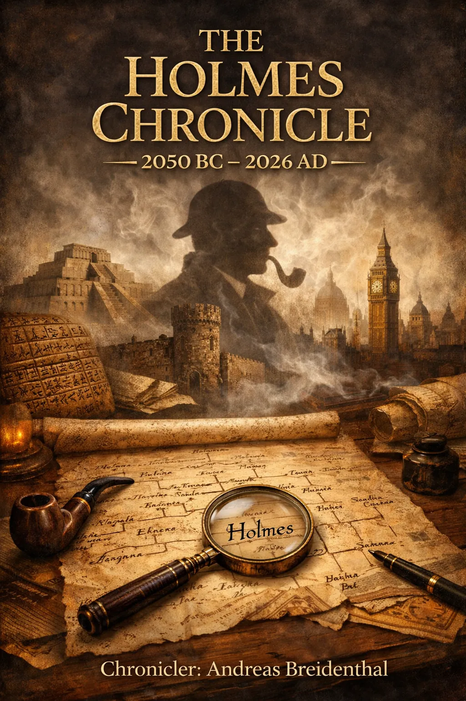

~2050 BC – 2026 AD

One hundred and thirty-one generations across four thousand years — each bearing the same inherited analytical gift, each embedded at the heart of their civilisation, each quietly dismantling the organised criminal networks that persist across every age of human history.
The gift survived the fire. It always did.
From the scribe of Ur to the present day, the same faculty — methodical observation,
inference from particulars, the patient dismantling of what ordinary intelligence
cannot see — passed from parent to child across one hundred and thirty-one generations,
finding in each the form that the age required.